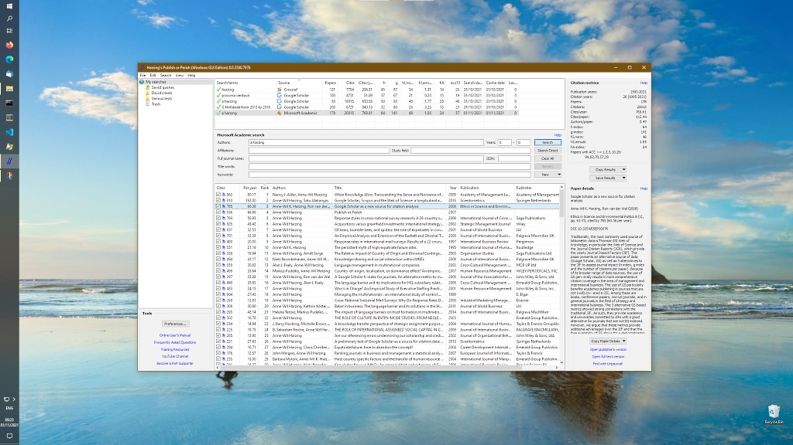

13 Literaturreviews
13.1 Überblick
Systematische Literaturreviews (Studie zum Literaturüberblick) sind (ceteris paribus) nicht-systematischen Literaturreviews vorzuziehen.
Es gibt viele Anleitungen, wie man einen (guten systematischen) Literaturüberblick schreibt; Siddaway, Wood, und Hedges (2019) stellen einen empfehlenswerten mit Schwerpunkt auf der Psychologie bereit.
13.2 Vorgehen nach Siddaway, Wood, und Hedges (2019)
- Festlegung der Notwendigkeit eines Reviews
- Begründung, warum ein systematischer Review erforderlich ist, z. B. bei widersprüchlichen Ergebnissen in der bestehenden Literatur oder bei offenen Forschungsfragen.
- Präzise Definition der Forschungsfrage
- Formulierung einer klaren und fokussierten Frage, die den Rahmen für den gesamten Review-Prozess bildet.
- Planung der Methodik
Festlegung der Ein- und Ausschlusskriterien für Studien.
Auswahl geeigneter Datenbanken und Entwicklung einer umfassenden Suchstrategie.
Berücksichtigung sowohl veröffentlichter als auch unveröffentlichter Arbeiten, um Publikationsbias zu minimieren.
- Durchführung der Literaturrecherche
- Systematische Suche in den ausgewählten Datenbanken unter Anwendung der definierten Suchbegriffe und Filter.
- Auswahl relevanter Studien
Anwendung der Ein- und Ausschlusskriterien zur Identifikation relevanter Studien.
Dokumentation des Auswahlprozesses, idealerweise mit einem Flussdiagramm (z. B. PRISMA-Flowchart).
- Datenextraktion
- Systematische Erfassung relevanter Daten aus den eingeschlossenen Studien, wie z. B. Studiendesign, Stichprobengröße, Ergebnisse und Qualität.
- Bewertung der Studienqualität
- Einsatz standardisierter Instrumente zur Beurteilung der methodischen Qualität der Studien.
- Synthese der Ergebnisse
Je nach Art der Daten erfolgt eine narrative Synthese, eine Meta-Analyse oder eine Meta-Synthese.
Integration der Ergebnisse zur Beantwortung der Forschungsfrage.
- Kritische Reflexion
Diskussion der Ergebnisse im Kontext der Forschungsfrage.
Identifikation von Limitationen, möglichen Biases und Forschungslücken.
- Berichterstattung
Transparente und vollständige Darstellung des gesamten Review-Prozesses.
Einhaltung von Reporting-Standards wie PRISMA zur Sicherstellung der Nachvollziehbarkeit.
Diese strukturierte Vorgehensweise gewährleistet die Transparenz, Reproduzierbarkeit und wissenschaftliche Integrität eines systematischen Literaturreviews. Für Studierende im Bachelorstudium der Psychologie bietet dieser Leitfaden eine wertvolle Orientierung bei der Planung und Durchführung ihrer Arbeiten.
13.3 Beispiele für gute systematische Literaturreviews
13.3.1 Aus studentischer Feder
Die Schriftenreihe des iwp der FOM Hochschule bietet u.a. dieses Beispiel für ein systematisches Literaturreview.
13.3.2 Psychologischer Fachartikel
Goldberg u. a. (2018) und Chakhssi u. a. (2018) sind Beispiele für gute Anwendungen systematischer Literaturreviews. Im Folgenden ist das methodische Vorgehen von Goldberg u. a. (2018) dargestellt.
- Zielsetzung und Forschungsfrage
Die Autoren untersuchten die Wirksamkeit von Interventionen der Positiven Psychologie (PPIs) auf das Wohlbefinden (primäres Outcome) sowie auf Depression, Angst und Stress (sekundäre Outcomes) bei klinischen Populationen mit psychiatrischen oder somatischen Erkrankungen.
- Literaturrecherche
- Datenbanken: Es wurde eine umfassende Suche in den Datenbanken PsycINFO, PubMed und Scopus durchgeführt.
- Zeitraum: Berücksichtigt wurden Studien, die zwischen dem 1. Januar 1998 und dem 31. Mai 2017 veröffentlicht wurden.
- Suchstrategie: Die Suche erfolgte systematisch unter Verwendung spezifischer Suchbegriffe, um relevante kontrollierte Studien zu identifizieren.
- Ein- und Ausschlusskriterien
Einschlusskriterien:
- Kontrollierte Studien mit erwachsenen Teilnehmern (≥18 Jahre) mit diagnostizierten psychiatrischen oder somatischen Erkrankungen.
- Interventionen, die auf Theorien der Positiven Psychologie basieren und positive Gefühle, Kognitionen oder Verhaltensweisen fördern.
- Verwendung validierter Messinstrumente für Wohlbefinden oder verwandte Konstrukte.
Ausschlusskriterien:
- Studien, die sich primär auf körperliche Übungen, Achtsamkeit, Meditation oder reminiszente Interventionen konzentrieren.
- Nicht in englischer Sprache veröffentlichte Studien oder solche ohne Peer-Review.
- Datenextraktion und Qualitätsbewertung
- Datenextraktion: Es wurden Informationen zu Studiendesign, Teilnehmermerkmalen, Art der Intervention, Dauer, Messzeitpunkten und Ergebnissen systematisch erfasst.
- Qualitätsbewertung: Die methodische Qualität der Studien wurde anhand eines siebenstufigen Bewertungssystems beurteilt, das auf dem Cochrane-Risiko-von-Bias-Tool und der Jadad-Skala basiert. Kriterien umfassten u.a. Randomisierung, Verblindung, Umgang mit fehlenden Daten und Durchführung von Intention-to-Treat-Analysen.
- Statistische Analyse
- Effektstärkeberechnung: Für jede Studie wurden standardisierte Mittelwertsdifferenzen (Hedges’ g) berechnet, wobei Prä- und Post-Interventionswerte berücksichtigt wurden.
- Publikationsbias: Es wurden Analysen durchgeführt, um etwaigen Publikationsbias zu bestimmen.
- Registrierung und Transparenz Das Review wurde im PROSPERO-Register unter der Nummer CRD42016037451 registriert, was die Transparenz und Nachvollziehbarkeit des methodischen Vorgehens unterstützt.
13.4 Suchterme
Benutzt man eine Suchmaschine für die Auswahl an geeigneten Studien, ist es ratsam, Suchoperatoren zu verwenden. Dazu zählen:
"Anführungsstriche für exakte Suchen, z.B."positive psychology interventions"OR(in Großbuchstaben) für das logische Oder, z.B."mindfulness" OR "meditation"-Minuszeichen, um Suchterme auszuschließen, z.B."mindfulness" -stress*Asterisk-Sternchen als “Joker” – wird bei Google Scholar nicht unterstützt(Klammern, um Suchausdrücke zu grupieren – wird bei Google Scholar nicht zuverlässig unterstützt
Beispielhaft sind hier die Suchterme aus dem Artikel von Goldberg u. a. (2018) dargestellt.
Search strategy: PubMed
#1 ("well-being"[tiab] OR happiness OR happy OR “life satisfaction”[tiab] OR “satisfaction with life”[tiab] OR "positive psychology"[tiab] OR "positive emotion"[tiab] OR "positive feeling"[tiab] OR "positive cognition"[tiab] OR "positive behavior"[tiab] OR "positive behaviour"[tiab] OR compassion[tiab] OR optimism[tiab] OR gratitude[tiab] OR kindness [tiab])
#2 (Happiness[Mh] OR Positive Psychology[Mh] OR Well Being[Mh] OR Optimism[Mh] OR Life Satisfaction[Mh] OR Compassion[Mh] OR Optimism[Mh])
#3 (intervention*[tiab] OR therap*[tiab] OR treatment*[tiab] OR training*[tiab] OR program*[tiab] OR exercise[tiab])
#4 (Therapy[Mh] OR Psychotherapy[Mh] OR Training[Mh] OR Exercise[Mh])
#5 (symptom*[tiab] OR disorder*[tiab] OR illness*[tiab] OR disease*[tiab] OR impairment[tiab] OR “clinical sample”[tiab])
#6 (disorder[Mh] OR disease[Mh] OR clinical psychology[Mh])
#7 (effect*[tiab] OR effic*[tiab] OR outcome*[tiab] OR evaluat*[tiab])
#8 (random*[tiab] OR RCT*[tiab] OR control*[tiab] OR non-random*[tiab] OR pilot*[tiab] OR condition[tiab])
#9 #1 OR #2
#10 #3 OR #4
#11 #5 OR #6
#12 #9 AND #10 AND #11 AND #7 AND #8 (filters: English, Adults)13.5 Reproduzierbarkeit
Auch bei systematischen Überblicksarbeiten spielt Reproduzierbarkeit eine wichtige Rolle. Um Reproduzierbarkeit sicherzustellen, sollten folgende Punkte berücksichtigt werden:
- Protokollierung des Vorgehens
- Protokollierung und Berücksichtigung der PRISMA-Standards
- Protokollierung aller Studien, die für die Arbeit berücksichtigt wurden.
Bei Goldberg u. a. (2018) findet man (als elektronische Anlage, supplement 1) das Verzeichnis der in die Analyse aufgenommene Studien.
13.6 Software
Für Recherchen mit Google Scholar ist die Software Publish or Perish zu empfehlen, s. ?fig-pop (verfügbar für Windows und Mac und Linux). Die Software ist kostenfrei.

Mit dieser Software kann man die Suchtreffer von Google Scholar in eine Excel-Liste übertragen.
13.7 Anhänge
Bei einem systematischen Reviews sind folgende Anhänge sinnvoll:
- Liste der Suchterme
- Liste der analysierten Studien